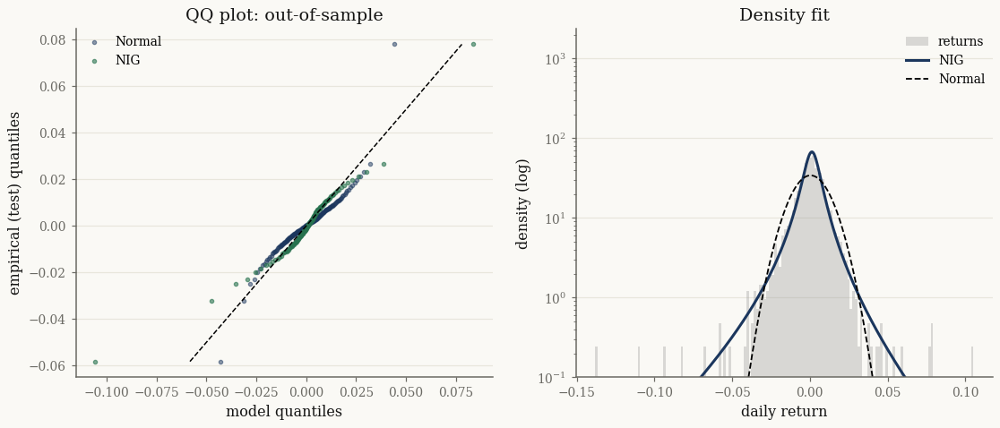

A heavy-tailed index series#
Daily equity-index returns are the canonical heavy-tailed, mildly skewed series — exactly what the GH family was built for. This tutorial fits the family to a market index proxy, compares members by out-of-sample log-likelihood, and inspects the tail behaviour the Gaussian misses.
We build an equal-weighted market index from the S&P 500 return panel shipped with the repository (a transparent stand-in for a published index level).
import jax
jax.config.update("jax_enable_x64", True)
import jax.numpy as jnp
import numpy as np
import pandas as pd
from pathlib import Path
from scipy import stats
from normix import (
MultivariateNormal,
NormalInverseGaussian, GeneralizedHyperbolic,
UnivariateNormalInverseGaussian, squared_hellinger,
)
from normix.utils.plotting import set_theme
set_theme()
np.set_printoptions(precision=5, suppress=True)
Data: an equal-weighted index#
data_path = Path("../../../data/sp500_returns.csv").resolve()
panel = pd.read_csv(data_path, index_col="Date", parse_dates=True).dropna(axis=1, how="any")
index_ret = panel.mean(axis=1) # equal-weight market return
print(f"{len(index_ret)} daily returns, {index_ret.index[0].date()} → {index_ret.index[-1].date()}")
print(f"mean {index_ret.mean():.5f} std {index_ret.std():.5f} "
f"skew {stats.skew(index_ret):.2f} excess kurt {stats.kurtosis(index_ret):.2f}")
2552 daily returns, 2015-12-15 → 2026-02-09
mean 0.00049 std 0.01168 skew -0.98 excess kurt 19.94
The large excess kurtosis is the headline: returns are far heavier-tailed than a normal. We split chronologically into train and test halves:
x = index_ret.values.astype(np.float64)
n_train = len(x) // 2
x_train, x_test = x[:n_train], x[n_train:]
X_train, X_test = x_train.reshape(-1, 1), x_test.reshape(-1, 1)
print("train:", X_train.shape[0], " test:", X_test.shape[0])
train: 1276 test: 1276
Fitting the family#
We fit a Gaussian baseline and two heavy-tailed GH-family members, then score each by mean log-likelihood on the held-out test set — the proper cross-family comparison:
gauss = MultivariateNormal.fit_mle(jnp.asarray(X_train))
fits = {
"NormalInverseGaussian": NormalInverseGaussian.default_init(X_train).fit(
X_train, max_iter=100, tol=1e-3, e_step_backend="cpu").model,
"GeneralizedHyperbolic": GeneralizedHyperbolic.default_init(X_train).fit(
X_train, max_iter=100, tol=1e-3, e_step_backend="cpu").model,
}
test_ll = {"Normal": float(jax.vmap(gauss.log_prob)(jnp.asarray(X_test)).mean())}
for name, m in fits.items():
test_ll[name] = float(m.marginal_log_likelihood(jnp.asarray(X_test)))
print("Out-of-sample mean log-likelihood (higher is better):")
for name, ll in sorted(test_ll.items(), key=lambda kv: -kv[1]):
print(f" {name:24s} {ll:8.4f}")
Out-of-sample mean log-likelihood (higher is better):
GeneralizedHyperbolic 3.1841
NormalInverseGaussian 3.1799
Normal 3.1142
Every GH-family member beats the Gaussian out of sample — the heavy tails pay off on data the model has never seen.
Tail behaviour#
We convert the best mixture to a univariate object for cdf/ppf and compare
its tails against the Gaussian on a QQ plot and a log-density panel:
best = fits["NormalInverseGaussian"]
u = UnivariateNormalInverseGaussian.from_classical(
mu=float(best.mu[0]), gamma=float(best.gamma[0]),
sigma=float(best.sigma()[0, 0]), mu_ig=float(best.mu_ig), lam=float(best.lam))
import matplotlib.pyplot as plt
xs = np.sort(x_test)
probs = (np.arange(1, len(xs) + 1) - 0.5) / len(xs)
idx = np.linspace(0, len(xs) - 1, 150).astype(int)
q_nig = np.asarray(jax.vmap(u.ppf)(jnp.asarray(probs[idx])))
q_norm = stats.norm.ppf(probs[idx], x_train.mean(), x_train.std())
fig, (aq, ad) = plt.subplots(1, 2, figsize=(12, 4.6))
lim = [xs[idx].min(), xs[idx].max()]
aq.scatter(q_norm, xs[idx], s=8, alpha=0.5, label="Normal")
aq.scatter(q_nig, xs[idx], s=8, alpha=0.6, label="NIG")
aq.plot(lim, lim, "k--", lw=1)
aq.set_xlabel("model quantiles"); aq.set_ylabel("empirical (test) quantiles")
aq.set_title("QQ plot: out-of-sample"); aq.legend()
grid = jnp.linspace(float(x.min()), float(x.max()), 400)
ad.hist(x, bins=150, density=True, alpha=0.35, color="0.6", label="returns")
ad.plot(np.asarray(grid), np.asarray(jax.vmap(u.pdf)(grid)), label="NIG")
ad.plot(np.asarray(grid), stats.norm.pdf(np.asarray(grid), x.mean(), x.std()),
"k--", lw=1.2, label="Normal")
ad.set_yscale("log"); ad.set_ylim(1e-1, None)
ad.set_xlabel("daily return"); ad.set_ylabel("density (log)"); ad.set_title("Density fit")
ad.legend()
plt.show()

Stability across periods#
For a single family, the squared Hellinger distance between the train-fit and the test-fit measures how stable the estimated law is across the two halves — small means the return distribution did not drift much:
nig_train = best
nig_test = NormalInverseGaussian.default_init(X_test).fit(
X_test, max_iter=100, tol=1e-3, e_step_backend="cpu").model
print(f"H²(train-fit, test-fit) = {float(squared_hellinger(nig_train, nig_test)):.4f}")
H²(train-fit, test-fit) = 0.0853
Takeaways#
An equal-weighted return panel gives a heavy-tailed index series with large excess kurtosis.
Out-of-sample mean log-likelihood is the right way to rank GH-family members against each other and the Gaussian — they all beat the normal here.
Univariate*cdf/ppfdrive the tail diagnostics; same-family Hellinger quantifies period-to-period stability.
Next: A multivariate stock basket moves to a multivariate basket and the latent volatility the mixture infers.